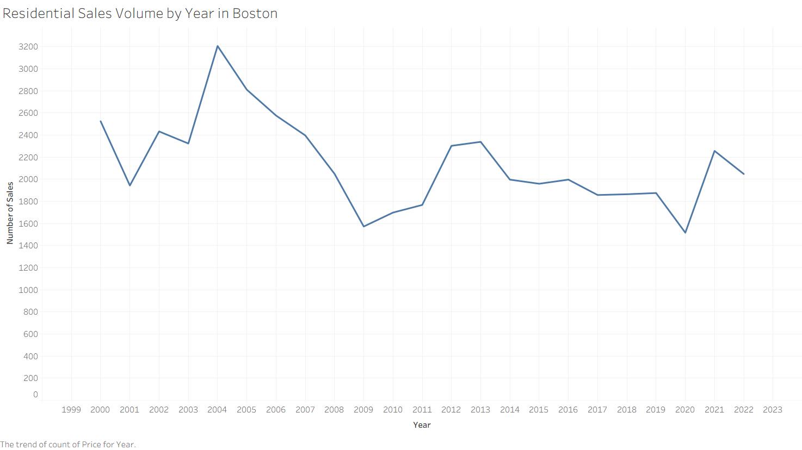
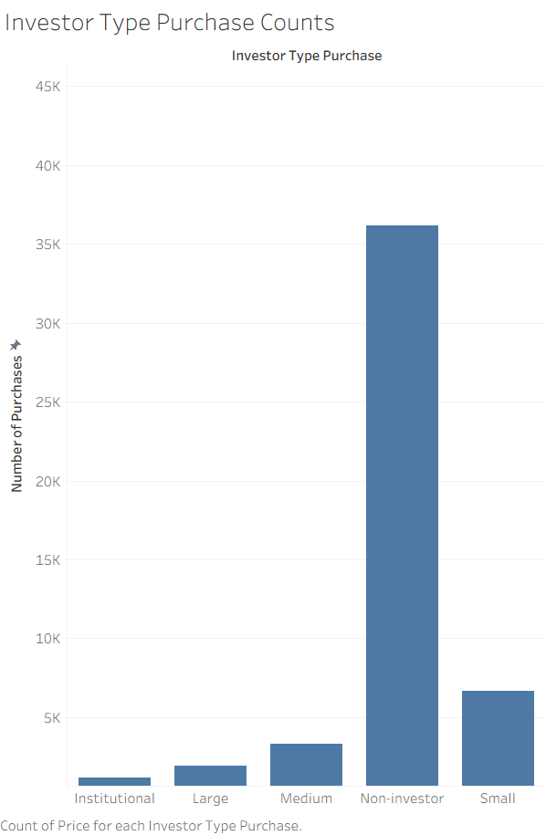
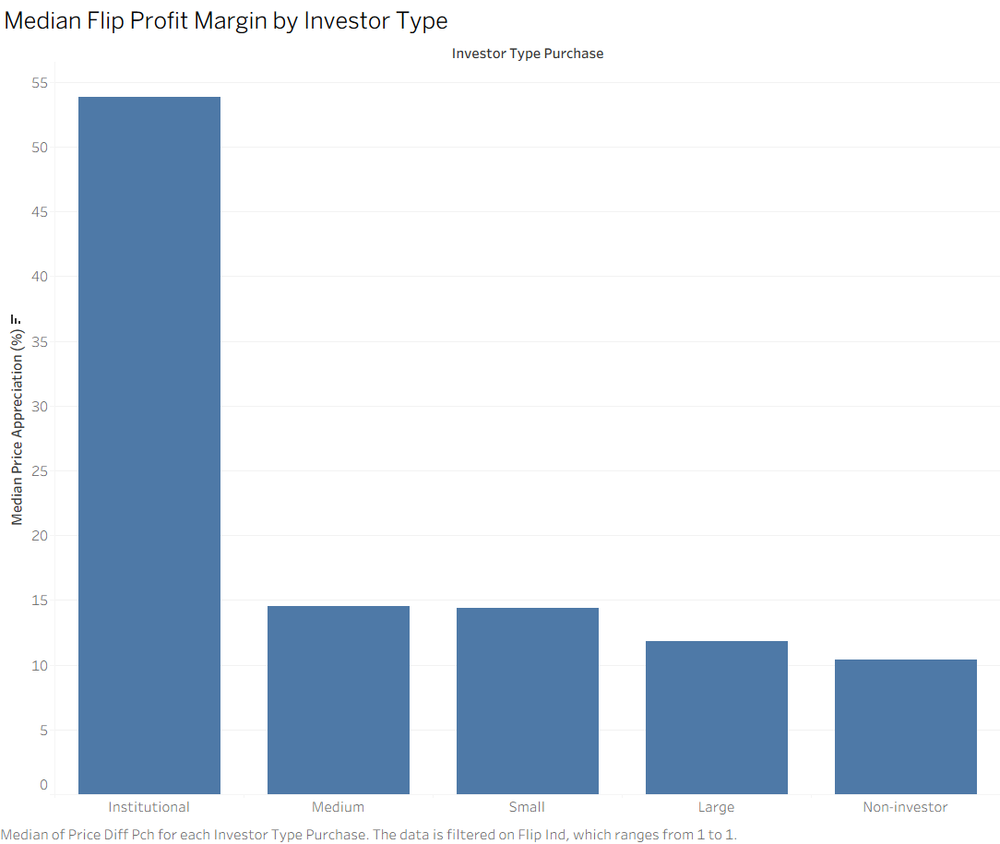
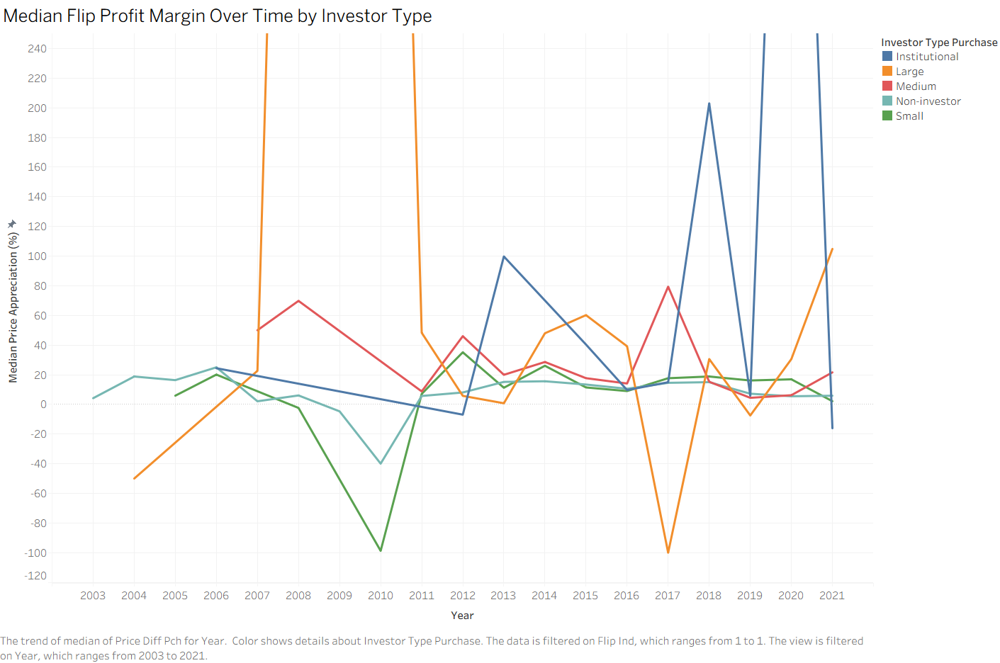
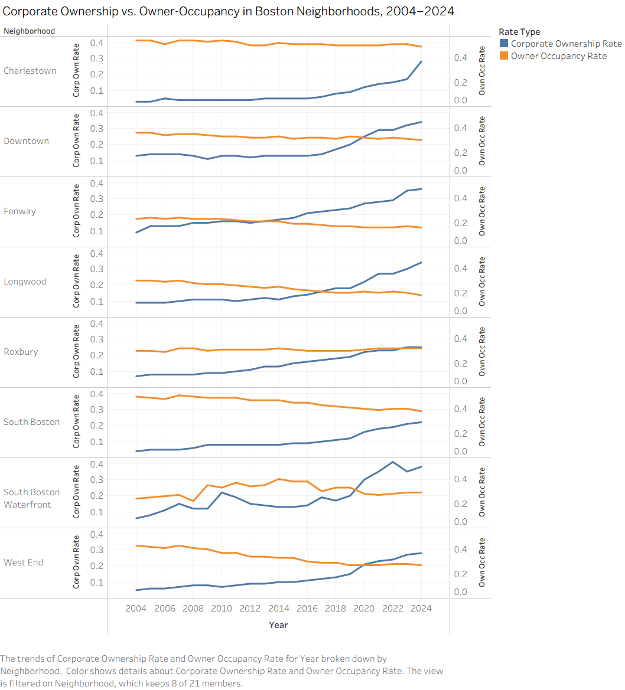
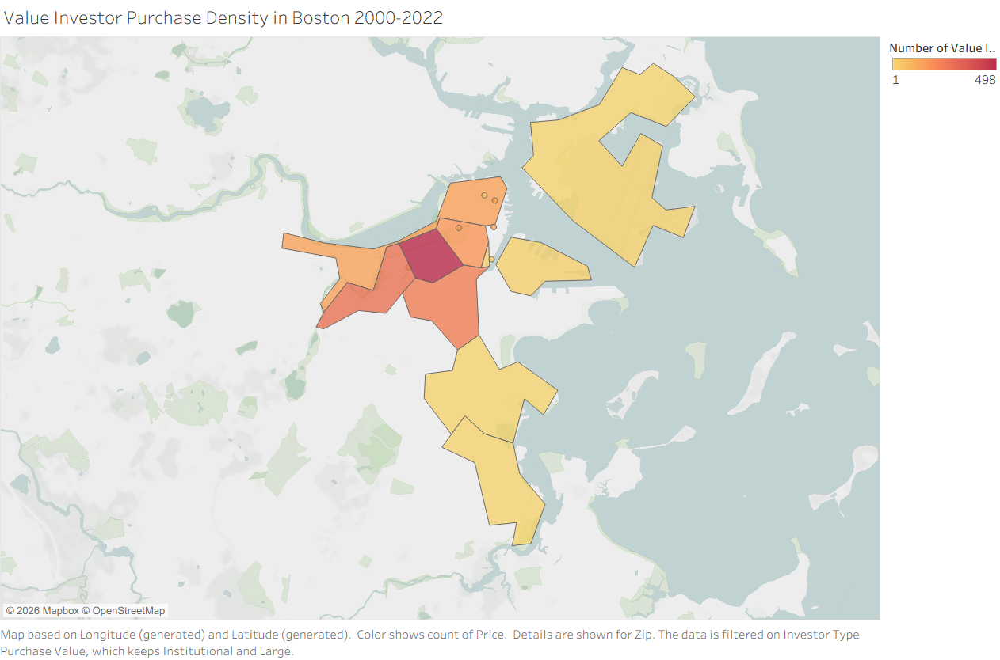
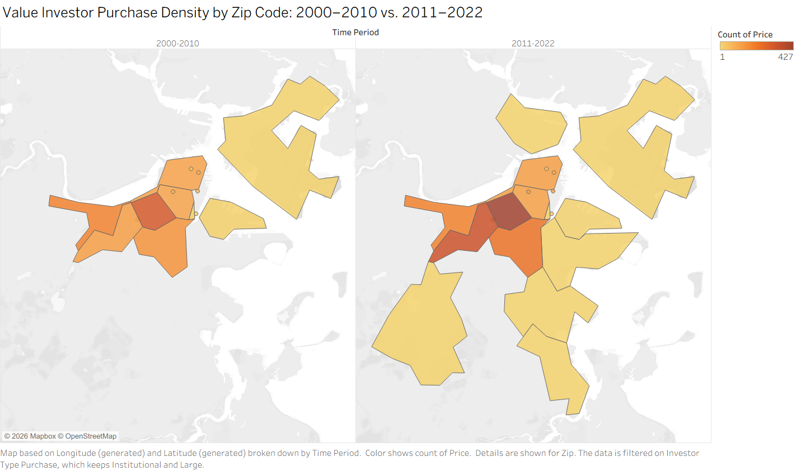
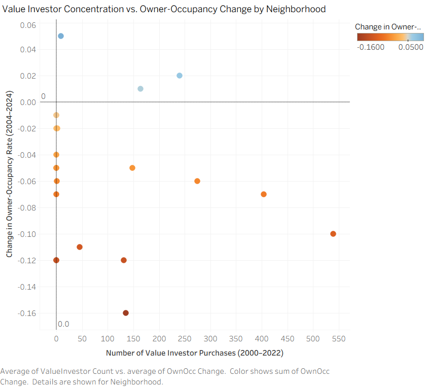

Subtheme: Speculation
Overall Analysis Questions
-
The Investor Flip Premium Over Time: How do profit margins on flipped properties compare across investor types (Small, Medium, Large, Institutional, and non-investor flippers), and has the investor premium grown relative to non-flipped property appreciation from 2000 to 2022?
Motivation: Reading the Homes for Profit report, I was struck by the statistic that a household now needs nearly $200,000 in annual income to afford a median-priced home in the Boston Metro. That number felt abstract until I connected it to the report's description of how investors buy properties and resell them at a markup within short windows, effectively embedding their profit into the new asking price that the next family must pay. I grew up hearing about how Boston used to be more affordable, and I wanted to put a concrete number on how much of today's price inflation is investors cashing out rather than genuine market appreciation.
Evidence: The Homes for Profit report (MAPC, 2023) explicitly classifies investor types by portfolio size and identifies flipping as a key mechanism by which investors extract value from the housing market. The report motivates this question directly by showing that investor activity has grown significantly since 2010. -
Corporate Ownership vs. Owner-Occupancy: A Neighborhood Divergence Story: Across Boston's neighborhoods from 2004 to 2024, which areas have seen the sharpest simultaneous rise in corporate ownership rates and fall in owner-occupancy rates, and does this divergence map onto neighborhoods with the highest concentrations of recent LLC buyer activity?
Motivation: The ProPublica piece "When Private Equity Becomes Your Landlord" describes tenants who suddenly find their building owned by a distant corporation that raises rents, cuts maintenance, and has no connection to the community. I kept thinking: is this happening in Boston too, and where? The Globe's "Reckoning with Boston's Towers of Wealth" reinforced this concern, describing luxury developments in the Seaport where a large share of units sit empty or are owned by out-of-state entities. That made me want to go beyond anecdote and find the neighborhoods where corporate ownership is rising fastest while actual residents are being squeezed out.
Evidence: The Homes for Profit report (MAPC, 2023) identifies LLC investors as a specific category of speculator who obscures large portfolios behind shell companies, making corporate ownership data a critical lens for understanding the true scale of non-resident investment. ProPublica's reporting further documents how this corporate ownership model produces measurable declines in residential stability. -
Geographic Concentration of Speculative Displacement: Which Boston zip codes show the highest density of Large and Institutional value investor purchases, and does that concentration correlate geographically with neighborhoods experiencing the steepest declines in owner-occupancy over the same period?
Motivation: The Homes for Profit report includes case studies of tenants who received rent increase notices of up to 70% shortly after an investor purchased their building. What struck me was that these were not scattered stories; they clustered in specific neighborhoods. The ProPublica piece makes a similar point nationally, arguing that once investors establish a foothold in a market, they tend to expand within it, creating a kind of speculative contagion. I wanted to test whether that pattern holds in Boston: are the neighborhoods absorbing the most high-value investor dollars the same ones where long-term residents are disappearing?
Evidence: The Homes for Profit report (MAPC, 2023) defines value investors as those spending $3.45M or more in aggregate and identifies them as the category most likely to reshape neighborhood housing markets. The ProPublica piece (2022) provides the broader national context for why geographic concentration of institutional investment is a meaningful signal of displacement risk, motivating the spatial focus of this question.
Discoveries & Insights
I begin my exploration by studying individual variables and addressing data quality issues. From there I move into multivariate plots and maps that speak directly to my analysis questions.
Phase 1: Data Overview


Phase 2, Question 1: The Investor Flip Premium Over Time


Phase 2, Question 2: Corporate Ownership vs. Owner-Occupancy

Phase 3, Question 3: Geographic Concentration of Speculative Displacement



Summary
In Boston, speculative real estate investment is neither random nor evenly distributed. It is concentrated, compounding, and measurably linked to the displacement of long-term residents. Across this analysis, I found that Institutional investors extract dramatically higher flip profit margins of approximately 54% compared to any other investor type when they do choose to flip, that corporate ownership has risen in virtually every Boston neighborhood while owner-occupancy has fallen, and that the neighborhoods absorbing the most high-value investor purchases are consistently those losing resident owners at the fastest rates. The temporal comparison of investor maps reveals that this is not a static phenomenon: speculation intensified and spread geographically after 2010, moving from its core in Downtown and Back Bay into adjacent neighborhoods. While factors like West End's extreme owner-occupancy decline remind me that speculation alone does not explain every displacement story, the overall pattern is unmistakable. To fully understand the mechanisms driving Boston's affordability crisis, future analysis should incorporate eviction data, rental price trends, and building permit records to connect speculative ownership patterns to the lived experiences of the residents being displaced.